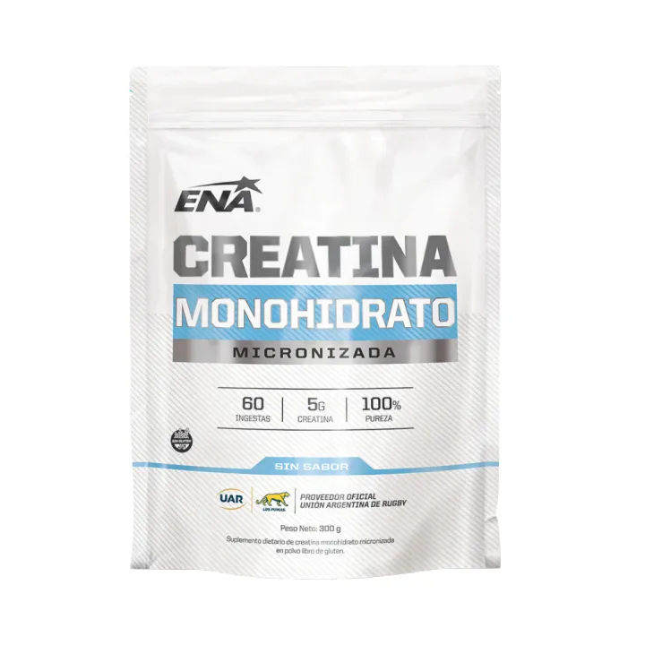

Creatina
5 g
de creatina
1 scoopUna cucharada por día
Equivalen a
Por día · valor aproximado, en crudo
Por eso se suplementa: una cucharada por día, todos los días.
Seguinos para saber más de suplementos
